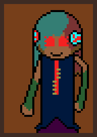

The Characters of Something of the Ancients
Return to Design DocumentSage
Bio: Sage is the protagonist of Something of The Ancients. Many of the denizens of Atlantis consider them to be a kind and friendly person, though something seems to be odd about them as of this day, they decided to go on an adventure to the crater to see what could be in there, all we know is that they claim to be searching for Something of the Ancient people who lived here.
Origin: Sage originally started out as a Deltarune OC, really the only appearance inspiration I can draw from for them is myself and one of my friends, eventually, similar to Deltarune, I decided that Sage would be the main character of SOTA, I suppose a fun fact is that they are canonically Agender (Which I'm sure will still cause Gender discourse). They also have a bit of a dual-conscience problem caused by the Player's arrival, they actually planned their expidition months in advance, it's just that the player arrives on the day of that expidition.

...
... Uh, I don't really have much of a character set out for her. I guess I can do some origin stuff for her.
Origin: She was my initial attempt at a design for the first area's boss, and also my first attempt at designing a character in Aseprite. For the redesign, I decided to use the pixel software I am most familiar with, Piskel, the redesign is a sharp difference from her initial appearance, which I think from first impressions seemed more like someone who liked to eat a lot, but I decided to try and emphasize the inspiration a bit more this time, the design inspiration being primarily Hatsune Miku, and also Kasane Teto a bit. I did also consider making her around the age of 16 or 17. Of course, the redesign also gave me a bit of struggle, as the portraits aren't really great at showing skirts (Then again 99% of my character designs just have them wearing pants).
The design is still a work in progress so there may be some changes to the design every so often.
